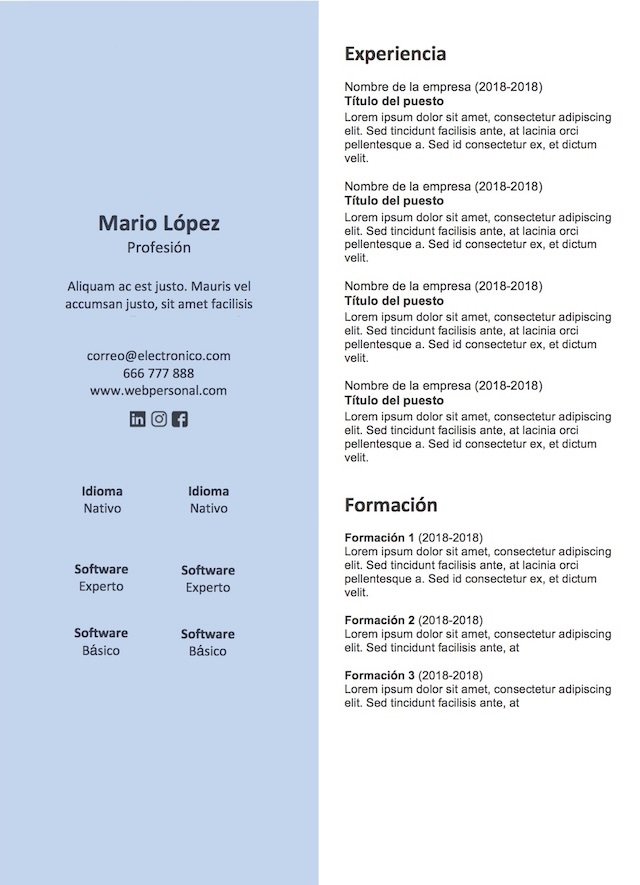

El Currículum Vitae sigue siendo una herramienta fundamental para encontrar trabajo y darte a conocer como profesional. Es la primera impresión que se van a llevar las empresas sobre ti y te conviene que sea inmejorable.
Debes tener en cuenta que el CV habla por ti: tu atención por el detalle, tu profesionalidad, tu creatividad, tu competencia digital… Se puede sacar mucha información de un currículum simplemente por su aspecto.
Lo primero que debes saber para tener un CV «ganador» es que debes personalizarlo para cada oferta de trabajo. Y tener en cuenta que en un CV no se miente, pero sí se destaca lo más relevante para un puesto o empresa, o se omite lo que puede o no ser relevante para cada oferta.
Hay mucha controversia sobre si debe incluirse o no una fotografía. Algunos expertos dicen que hace que el seleccionador se fije en tu aspecto exterior sin llegar a leer el CV. En mi opinión, los CV deben llevar foto porque cuando estás seleccionando entre 2000 CV, la foto lo humaniza y lo personaliza. Es más fácil tirar a la papelera un CV sin foto que uno con foto. Esa es mi experiencia. Debes cuidar mucho la foto que pones en el currículum: no elijas cualquiera.
Te recomiendo que te hagas una buena fotografía, profesional, bien iluminada, donde se te vea la cara, estés mirando de frente y salgas con un gesto amable.
Por supuesto, no pongas una foto recortada donde apareces de fiesta, con amigos o en un bar, o que parezca que te busca la policía por homicidio. Debes transmitir una imagen acorde con el puesto. No lo olvides.

Junto a la foto, los primeros datos que debes poner en el currículum son tu nombre, apellidos, teléfono y correo electrónico. Que el seleccionador no tenga que estar buscando estos datos. En cuanto al mail, te recomiendo que sea una dirección de correo seria; lo mejor es que incluya tu nombre y apellidos o tus iniciales. No se te ocurra añadir esa cuenta de correo que tienes para los amigos con palabras inapropiadas o graciosas. Es interesante que junto a tus datos personales incluyas un enlace directo a tu web o blog y a tus redes sociales profesionales.
Debajo de tus datos, incluye unas líneas de cabecera. Estas líneas deben funcionar como resumen del CV, como llamada de atención. Usa palabras clave que te definan, o que definan tus logros pasados o tus objetivos profesionales, y siempre en relación con la oferta.
En general, te aconsejo que pongas antes la experiencia laboral que la formación. Las empresas van a valorarla más que los cursos o estudios que tengas. Debes escribirla en orden cronológico inverso, desde lo más reciente hasta lo más antiguo, empezando por los últimos trabajos realizados. Te interesa dar más visibilidad (usando negritas, por ejemplo) a la experiencia relacionada con el puesto que quieres conseguir. En el apartado de experiencia debes poner:
- El nombre del puesto.
- El nombre de la empresa.
- El periodo de tiempo que estuviste trabajando.
- Una breve descripción de las funciones desempeñadas con palabras clave, siempre relacionadas con la oferta a la que respondes.
En el apartado de formación debes incluir tus últimos estudios y dónde se impartieron. Si son superiores, no hace falta que pongas también los anteriores, salvo que haya algo reseñable (por ejemplo, una matrícula de honor). Se entiende que si eres licenciado has superado con éxito COU y la selectividad. En cuanto a la formación complementaria, debes escribir sobre todo la que está relacionada con la oferta de trabajo en cuestión.
Para los idiomas es recomendable hacer referencia al nivel según el Marco Común Europeo de Referencia para las Lenguas. Es decir, al indicar tu nivel utiliza los términos B1, B2, C1, C2, etc., en vez de «nivel medio», «intermedio» o «alto». Es recomendable que no pongas «nivel básico»: no es relevante y no te genera más oportunidades; el efecto puede ser justo el contrario. Tanto para este apartado como para las habilidades blandas (soft skills) o los conocimientos informáticos, me gustan mucho los gráficos, que de un vistazo permiten al entrevistador ver qué idiomas hablas y a qué nivel.
Para que tu currículum sea atractivo y fácil de leer te conviene ser breve y conciso. Escribe frases cortas. Nunca más de una página. Los seleccionadores de personal tardan una media de 7 segundos en decidir si un CV es interesante o no. Tenlo en cuenta.
Destaca los datos extra relacionados con las habilidades, los idiomas y los conocimientos tecnológicos, que cada vez son más valorados. Cuida su presentación: usa elementos más visuales o gráficos para contarlos.
También es algo evidente, pero conviene recordarlo porque es muy importante: un currículum con faltas de ortografía o de expresión causa una impresión nefasta y dice muy poco de su autor. Por un lado, deja en evidencia que no se ha revisado el texto antes de entregarlo; por otro, daña tu imagen. También tienes que elegir el mejor tipo de letra para que sea bien legible. Te aconsejo que, antes de mandarlo, se lo pases a algún amigo o persona con criterio para que le eche un vistazo y te diga si está todo bien. (Fuente)
Ten en cuenta que, según el puesto al que estés optando, puedes necesitar elaborar CV más creativos. Te dejo algunos ejemplos:
Tarea (fecha límite 23 de abril)
- Elaborar y entregar un CV para responder a esta oferta de empleo de Decasarre SAS.
- Elaborar en grupo y entregar un vídeo currículum para responder a esta misma oferta.
Oferta de empleo: Administrativo de Atención al Cliente (PDF)
Esta es una oferta de trabajo simulada, con fines educativos.